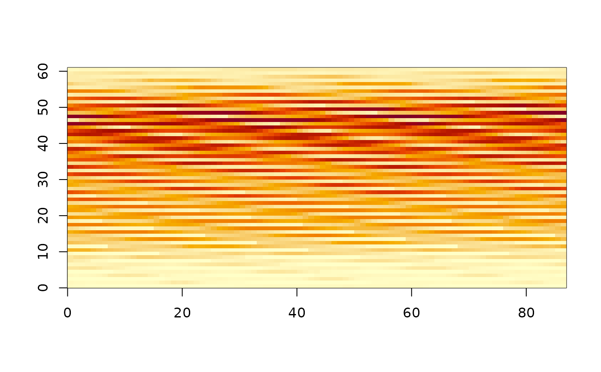
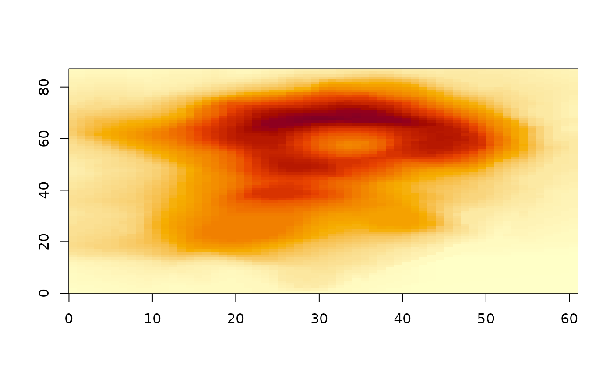

ximage combines the best of graphics::image() and graphics::rasterImage().
Usage
ximage(
x,
extent = NULL,
zlim = NULL,
add = FALSE,
...,
xlab = NULL,
ylab = NULL,
col = hcl.colors(96, "YlOrRd", rev = TRUE),
breaks = NULL,
alpha = NULL,
na.col = "transparent"
)
# S3 method for class 'raw'
ximage(
x,
extent = NULL,
zlim = NULL,
add = FALSE,
...,
xlab = NULL,
ylab = NULL,
col = hcl.colors(96, "YlOrRd", rev = TRUE),
breaks = NULL,
alpha = NULL,
na.col = "transparent",
force = FALSE
)
# S3 method for class 'numeric'
ximage(
x,
extent = NULL,
zlim = NULL,
add = FALSE,
...,
xlab = NULL,
ylab = NULL,
col = hcl.colors(96, "YlOrRd", rev = TRUE),
breaks = NULL,
alpha = NULL,
na.col = "transparent",
force = FALSE
)
# S3 method for class 'integer'
ximage(
x,
extent = NULL,
zlim = NULL,
add = FALSE,
...,
xlab = NULL,
ylab = NULL,
col = hcl.colors(96, "YlOrRd", rev = TRUE),
breaks = NULL,
alpha = NULL,
na.col = "transparent",
force = FALSE
)
# S3 method for class 'character'
ximage(
x,
extent = NULL,
zlim = NULL,
add = FALSE,
...,
xlab = NULL,
ylab = NULL,
col = hcl.colors(96, "YlOrRd", rev = TRUE),
breaks = NULL,
alpha = NULL,
na.col = "transparent",
force = FALSE
)Arguments
- x
matrix, array, raw or character matrix, native raster (nativeRaster, or raster), or list as output by GDAL reader functions
- extent
optional, numeric xmin,xmax,ymin,ymax
- zlim
optional, absolute range of data to map colours to (maintains comparable colours across plots); values outside display as 'na.col'; single-band numeric data only
- add
add to plot, or start afresh
- ...
passed to plot when
add = FALSE- xlab
x axis label, empty by default
- ylab
y axis label, empty by default
- col
colours to map single-band data to
- breaks
a set of finite numeric breakpoints for the colours, one more break than colour (if not, colours are interpolated to fit)
- alpha
optional constant opacity in
[0, 1](or vector/matrix, recycled) applied on top of any existing alpha channel; not supported for nativeRaster input- na.col
colour for missing values, default "transparent"
- force
proceed with a guessed dimension for very long bare vectors (see Details), default
FALSE
Value
invisibly, a list with 'x' (the colour data as plotted) and 'extent' (xmin, xmax, ymin, ymax used, the 0,ncol 0,nrow index space of the input if not supplied)
Details
ximage() is a combination those graphics function with the the best features in one.
Allow arrays with RGB/A.
Allow matrix with character (named colours, or hex) or raw (Byte) values
Allow list output from vapour or gdalraster, a list with numeric values, hex character, or nativeRaster
Plot in 0,ncol 0,nrow by default
Override default with extent (xmin, xmax, ymin, ymax)
Allow general numeric values.
Start a plot from scratch without setting up a plot to paint to.
Plot by default in 0,ncol,0,nrow if unspecified.
Data orientation is "raster order", the first cell is the top-left of the displayed image, following scan lines down the page (see the package vignette on orientation).
Bare atomic vectors (no dim, no 'gis' attribute from gdalraster, no
width/height/depth attributes) are accepted and a dimension is guessed
by integer-division detection of the vector length. The most nearly
square factorization is chosen (preferring landscape, ncol >= nrow) and
the data is assumed to be in raster scanline order, i.e. flat output
from GDAL readers such as vapour::gdal_raster_data() or
gdalraster::read_ds(), built as matrix(x, ncol = NC, byrow = TRUE);
column-major R data needs dim(x) <- c(NR, NC) instead. A message
reports the guess and the candidate factorizations from 1xN through
Nx1, in GDAL dimension order (ncol x nrow, xsize x ysize). Raw
vectors also consider 3-plane (RGB) and 4-plane (RGBA) scanline
pixel-interleaved interpretations; numeric data never gets a plane
interpretation (whole numbers in 0..255 are too common as ordinary
data to imply an image, a much narrower opt-in detection may come
later). For very long vectors (more than
getOption("ximage.guess_max", 2^24) elements) the guess stops with
an error unless force = TRUE, or set the dimension explicitly.
Colour mapping via 'col', 'breaks', and 'zlim' applies to single-band numeric data only. Multi-band (grey/alpha, RGB, RGBA) data is scaled automatically: values within 0,1 are used as-is, within 0,255 are divided by 255, and anything else is rescaled by the finite range of the colour bands. Missing values (NA, NaN) display as 'na.col' in all cases.
Examples
ximage(volcano)
 ximage(as.raster(matrix(0:1, 49, 56)))
ximage(as.raster(matrix(0:1, 49, 56)))
 v <- volcano
v[v > 180] <- NA
ximage(v, na.col = "hotpink")
v <- volcano
v[v > 180] <- NA
ximage(v, na.col = "hotpink")
 ## bare vectors in GDAL scanline order get a guessed dimension, with a
## message listing candidate shapes (ncol x nrow); here the guess 87x61
## is the mirror of the true 61x87, so pick from the candidates
ximage(as.vector(t(volcano)))
#> guessing dimension for vector of length 5,307
#> using ncol x nrow = 87 x 61 (GDAL xsize x ysize), as matrix(x, ncol = 87, byrow = TRUE)
#> candidates (ncol x nrow): 1x5307, 3x1769, 29x183, 61x87, [87x61], 183x29, 1769x3, 5307x1
## bare vectors in GDAL scanline order get a guessed dimension, with a
## message listing candidate shapes (ncol x nrow); here the guess 87x61
## is the mirror of the true 61x87, so pick from the candidates
ximage(as.vector(t(volcano)))
#> guessing dimension for vector of length 5,307
#> using ncol x nrow = 87 x 61 (GDAL xsize x ysize), as matrix(x, ncol = 87, byrow = TRUE)
#> candidates (ncol x nrow): 1x5307, 3x1769, 29x183, 61x87, [87x61], 183x29, 1769x3, 5307x1

ximage(matrix(as.vector(t(volcano)), ncol = 61, byrow = TRUE))
